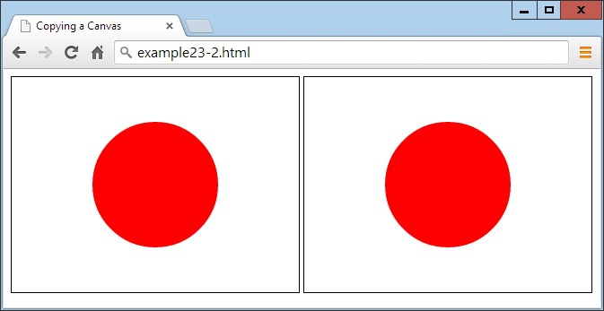
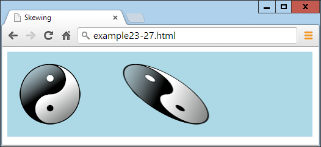

The HTML5 Canvas
Although the collective term given to the new web technologies is HTML5, they are not all simply HTML tags and properties. Such is the case with the canvas element. Yes, you create a canvas by using the <canvas> tag, and maybe supply a width and height, and can modify it a little with CSS, but to actually write to (or read from) a canvas, you must use JavaScript.
Thankfully, the JavaScript you need to learn is minimal and very easy to implement, plus I’ve already provided you with a set of three ready-made functions in Chapter 21 (in the file OSC.js ) to make accessing objects such as the canvas even more straightforward. So let’s dive right in and start using the new <canvas> tag.
Creating and Accessing a Canvas
In the previous chapter, I showed you how to draw a simple circle to display the Japanese flag, as in Example 23-1. Let’s now look at what exactly is going on.
Example 23-1. Displaying the Japanese flag by using a canvas
<!DOCTYPE html>
<html>
<head>
<title>The HTML5 Canvas</title>
<script src='OSC.js'></script>
</head>
<body>
<canvas id='mycanvas' width='320' height='240'>
This is a canvas element given the ID <i>mycanvas</i>
This text is only visible in non-HTML5 browsers
</canvas>
<script>
canvas = O('mycanvas')
context = canvas.getContext('2d')
context.fillStyle = 'red'
S(canvas).border = '1px solid black'
context.beginPath()
context.moveTo(160, 120)
context.arc(160, 120, 70, 0, Math.PI * 2, false)
context.closePath()
context.fill()
</script>
</body>
</html>
First, the <!DOCTYPE html> declaration is issued to tell the browser that the document will use HTML5. After this, a title is displayed and the three functions in the OSC.js file are loaded in.
In the body of the document, a canvas element is defined, given an ID of mycanvas, and given a width and height of 320 by 240 pixels.
This is followed by a section of JavaScript that styles and draws on the canvas. We begin by creating a canvas object by calling the O function on the canvas element. As you will recall, this calls the document.getElementById function, and is therefore a much shorter way of referencing the element.
This is all stuff you’ve seen before, but next comes something new:
context = canvas.getContext('2d')
This command calls the getContext method of the new canvas object just created, requesting two-dimensional access to the canvas by passing the value '2d'.
As you might guess, there are plans for a three-dimensional context available for the canvas (probably based on the OpenGL ES API), which will support the argument '3d'. But for now, if you want to display 3D on a canvas, you’ll need to do the math yourself and “ fake” it in 2D. Or you could investigate WebGL (which is based on OpenGL ES). There’s no room to cover it here, but you can find a great tutorial at http://learningwebgl.com.
Armed with this context in the object context, we prime the subsequent drawing commands by setting the fillStyle property of context to the value 'red' :
context.fillStyle = 'red'
Then the S function is called to set the border property of the canvas to a 1-pixel, solid black line to outline the flag image:
S(canvas).border = '1px solid black'
With everything prepared, a path is opened on the context and the drawing position is moved to the location 160,120:
context.beginPath()
context.moveTo(160, 120)
After that, an arc is drawn centered on that coordinate, with a radius of 70 pixels, beginning at an angle of 0 degrees (which is the righthand edge of the circle as you look at it), and continuing all the way around the circle in radians as determined by a value of 2 × π:
context.arc(160, 120, 70, 0, Math.PI * 2, false)
The final value of false indicates a clockwise direction for drawing the arc; a value of true would indicate that the drawing should occur in a counterclockwise direction.
Finally, we close and fill the path, using the preselected value in the fillStyle property that we set to 'red' a few lines earlier:
context.closePath()
context.fill()
The result of loading this document into a web browser looks like Figure 22-1 in the previous chapter.
The toDataURL Function
When you have created an image in a canvas, you will sometimes want to make a copy of it, perhaps to repeat elsewhere on a web page, to save to local storage, or to upload to a web server. This is particularly handy since users cannot use drag and drop to save a canvas image.
To illustrate how you do this, in Example 23-2 I have added a few lines of code to the previous example (highlighted in bold). These create a new <img> element with the ID 'myimage', give it a solid black border, and then copy the canvas image into the <img> element (see Figure 23-1 ).
Example 23-2. Copying a canvas image
<!DOCTYPE html>
<html>
<head>
<title>The HTML5 Canvas</title>
<script src='OSC.js'></script>
</head>
<body>
<canvas id='mycanvas' width='320' height='240'>
This is a canvas element given the ID <i>mycanvas</i>
This text is only visible in non-HTML5 browsers
</canvas>
<img id='myimage'>
<script>
canvas = O('mycanvas')
context = canvas.getContext('2d')
context.fillStyle = 'red'
S(canvas).border = '1px solid black'
context.beginPath()
context.moveTo(160, 120)
context.arc(160, 120, 70, 0, Math.PI * 2, false)
context.closePath()
context.fill()
S('myimage').border = '1px solid black'
O('myimage').src = canvas.toDataURL()
</script>
</body>
</html>

Figure 23-1. The image on the right is copied from the lefthand canvas
If you try this code for yourself, you will notice that while you cannot drag and drop the lefthand canvas image, you can do so with the righthand picture, which you could also save to local storage or upload to a web server using the right JavaScript (and PHP on the server end).
Specifying an Image Type
When creating an image from a canvas, you can specify the type of image you want out of.jpg and.png. The default is.png ( 'image/png' ), but should you prefer.jpg, you can alter the call to toDataURL. At the same time, you can also specify the amount of compression to use between 0 (for lowest quality) and 1 (for highest quality). The following uses a compression value of 0.4, and should generate a reasonably good- looking image at a fairly low file size:
O('myimage').src = canvas.toDataURL('image/jpeg', 0.4)
You should remember that the toDataURL method applies to a canvas object, not to any context created from that object.
Now that you know how to create canvas images and then copy or otherwise use them, it’s time to look at the drawing commands available, starting with rectangles.
The fillRect Method
There are two different methods you can call for drawing rectangles, the first of which is fillRect. To use it, you simply supply the top-left coordinates of your rectangle, followed by the width and height in pixels, like this:
context.fillRect(20, 20, 600, 200)
By default, the rectangle will be filled with black, but you can use any other color you like by first issuing a command such as the following, where the argument can be any acceptable CSS color name or value:
context.fillStyle = 'blue'
The clearRect Method
You can also draw a rectangle in which all its color values (red, green, blue, and alpha transparency) have been set to 0, like the following, which uses the same order of coordinates, and width and height arguments:
context.clearRect(40, 40, 560, 160)
Once the clearRect method is applied, the new clear rectangle will strip all color from the area it covers, leaving only any underlying CSS color that has been applied to the canvas element.
The strokeRect Method
When you want only an outlined rectangle, you can use a command such as the following, which will use the default of black or the currently selected stroke color:
context.strokeRect(60, 60, 520, 120)
To change the color used, you can first issue a command such as the following, supplying any valid CSS color argument:
context.strokeStyle = 'green'
Combining These Commands
In Example 23-3, the preceding rectangle-drawing commands have been combined to display the image shown in Figure 23-2.
Example 23-3. Drawing several rectangles
<!DOCTYPE html>
<html>
<head>
<title>Drawing Rectangles</title>
<script src='OSC.js'></script>
</head>
<body>
<canvas id='mycanvas' width='640' height='240'></canvas>
<script>
canvas = O('mycanvas')
context = canvas.getContext('2d')
S(canvas).background = 'lightblue'
context.fillStyle = 'blue'
context.strokeStyle = 'green'
context.fillRect( 20, 20, 600, 200)
context.clearRect( 40, 40, 560, 160)
context.strokeRect(60, 60, 520, 120)
</script>
</body>
</html>
Figure 23-2. Drawing concentric rectangles
Later in this chapter, you’ll see how you can further modify output by changing stroke types and widths, but first let’s turn to modifying fills by applying gradients.
The createLinearGradient Method
There are a couple of ways to apply a gradient to a fill, but the simplest is with the createLinearGradient method. You specify start and end x and y coordinates relative to the canvas (not the object being filled). This allows for greater subtlety. For example, you can specify that a gradient begin at the far left and end at the far right of a canvas, but apply it only within the area defined in a fill command, as shown in Example 23-4.
Example 23-4. Applying a gradient fill
gradient = context.createLinearGradient(0, 80, 640,80)
gradient.addColorStop(0, 'white')
gradient.addColorStop(1, 'black')
context.fillStyle = gradient
context.fillRect(80, 80, 480,80)
For brevity and clarity in this and many of the following examples, only salient lines of code are shown. Complete examples with the surrounding HTML, setup, and other sections of code are available to freely download from the companion website at http://lpmj.net.
In this example, we create a gradient fill object named gradient by making a call to the createLinearGradient method of the context object. The start position of 0,80 is halfway down the lefthand canvas edge, while the end of 640,80 is halfway down the right-hand edge.
Then a couple of color stops are provided such that the very first color of the gradient is white, and the final color is black. The gradient will then transition smoothly between these colors across the canvas from left to right.
With the gradient object now ready, it is applied to the fillStyle property of the context object, so that the final fillRect call can use it. In this call, the fill is applied only in a central rectangular area of the canvas, so, although the gradient goes from the far left to the far right of the canvas, the portion of it shown is only from 80 pixels in and down from the top-left corner, to a width of 480 and depth of 80 pixels. The result (when added to the previous example code) looks like Figure 23-3.
Figure 23-3. The central rectangle has a horizontal gradient fill
By specifying different start and end coordinates for a gradient, you can make it slant in any direction, as demonstrated with Example 23-5 and shown in Figure 23-4.
Example 23-5. A variety of gradients at different angles and colors
gradient = context.createLinearGradient(0, 0, 160, 0)
gradient.addColorStop(0, 'white')
gradient.addColorStop(1, 'black')
context.fillStyle = gradient
context.fillRect(20, 20, 135, 200)
gradient = context.createLinearGradient(0, 0, 0, 240)
gradient.addColorStop(0, 'yellow')
gradient.addColorStop(1, 'red')
context.fillStyle = gradient
context.fillRect(175, 20, 135, 200)
gradient = context.createLinearGradient(320, 0, 480, 240)
gradient.addColorStop(0, 'green')
gradient.addColorStop(1, 'purple')
context.fillStyle = gradient
context.fillRect(330, 20, 135, 200)
gradient = context.createLinearGradient(480, 240, 640, 0)
gradient.addColorStop(0, 'orange')
gradient.addColorStop(1, 'magenta')
context.fillStyle = gradient
context.fillRect(485, 20, 135, 200)
Figure 23-4. A range of different linear gradients
In this example, I chose to place the gradients directly on top of the areas to be filled in order to more clearly show the maximum variation in color from start to end.
To create your gradient, determine the direction in which you want it to flow and then locate two points to represent the start and end. No matter what values you supply for these points, the gradient will smoothly transition in the direction given, even if the points are outside the fill area.
The addColorStop Method in Detail
You can use as many color stops in a gradient as you like, not just the two start and end colors used so far in these examples. This makes it possible to clearly describe almost any type of gradient effect you can imagine. To do this, you must specify the percent of the gradient that each color should take up, by allocating a floating-point start position along the gradient range between 0 and 1. You do not enter a color’s end position, as it is deduced from the start position of the next color stop, or the gradient end if there isn’t another color.
In the preceding examples, only the two start and end values were chosen, but to create a rainbow effect, you could set up your color stops as shown in Example 23-6 (and displayed in Figure 23-5 ).
Example 23-6. Adding multiple color stops
gradient.addColorStop(0.00, 'red')
gradient.addColorStop(0.14, 'orange')
gradient.addColorStop(0.28, 'yellow')
gradient.addColorStop(0.42, 'green')
gradient.addColorStop(0.56, 'blue')
gradient.addColorStop(0.70, 'indigo')
gradient.addColorStop(0.84, 'violet')
Figure 23-5. A rainbow effect with seven stop colors
In Example 23-6, all the colors are spaced roughly equidistantly (with each color given 14 percent of the gradient, and the final one 16), but you don’t have to stick to that; you can squish several colors near each other, while spacing others out. It’s entirely up to you as to how many colors you use and where in the gradient they start and end.
The createRadialGradient Method
You aren’t restricted to only linear gradients in HTML; you can create radial gradients on a canvas too. It’s a little more complex than with a linear gradient, but not much more so.
What you need to do is pass the center location as a pair of x and y coordinates, along with a radius in pixels. These are used as the start of the gradient and outer circumference, respectively. Then you also pass another set of coordinates and a radius to specify the end of the gradient. So, for example, to create a gradient that simply starts at the center of a circle and then expands out, you could issue a command such as the one in Example 23-7 (and displayed in Figure 23-6 ).
Example 23-7. Creating a radial gradient
gradient = context.createRadialGradient (320, 120, 0, 320, 120, 320)
Figure 23-6. A centered radial gradient
Or you can be fancy and move the location of the start and end of a radial gradient, as in Example 23-8 (displayed in Figure 23-7 ), which starts centered on location 0,120 with a radius of 0 pixels, and ends centered at 480,120 with a radius of 480 pixels.
Example 23-8. Stretching a radial gradient
gradient = context.createRadialGradient(0, 120, 0, 480, 120, 480)
Figure 23-7. A stretched radial gradient
By manipulating the figures supplied to this method, you can create a wide range of weird and wonderful effects—try it for yourself with the supplied examples.
Using Patterns for Fills
In a similar manner to gradient fills, you can also apply an image as a fill pattern. This can be an image anywhere in the current document, or even one created from a canvas via the toDataURL method (explained earlier in this chapter).
Example 23-9 loads a 100×100-pixel image (the yin-yang symbol) into the new image object image, and then the onload event of the object has a function attached to it that creates a repeating pattern for the fillStyle property of the context. This is then used to fill a 600×200-pixel area within the canvas, as shown in Figure 23-8.
Example 23-9. Using an image for a pattern fill
image = new Image()
image.src = 'image.png'
image.onload = function()
{
pattern = context.createPattern(image, 'repeat')
context.fillStyle = pattern
context.fillRect(20, 20, 600, 200)
}
Figure 23-8. Tiling an image by using it as a pattern fill
We create the pattern by using the createPattern method, which also supports nonrepeating patterns, or ones that just repeat in the x- or y-axes. We achieve this by passing one of the following values to it as the second argument after the image to use:
repeat
Repeat the image both vertically and horizontally.
repeat-x
Repeat the image horizontally.
repeat-y
Repeat the image vertically.
no-repeat
Do not repeat the image.
The fill pattern is based on the entire canvas area, so where the fill command is set to apply only to a smaller area within the canvas, the images appear cut off at the top and left.
If the onload event had not been used in this example and, instead, the code was simply executed as soon as encountered, the image might not have already loaded in time, and may not be displayed. Attaching to this event ensures that the image is available for use in the canvas, because the event triggers only upon successful loading of an image.
Writing Text to the Canvas
As you would expect from a set of graphics features, writing to the canvas with text is fully supported with a variety of font, alignment, and fill methods. But why would you want to write text to the canvas when there’s already such good support for web fonts in CSS these days?
Well, suppose you wish to display a graph or table with graphical elements. You’ll surely also want to label parts of it. What’s more, using the available commands, you can produce much more than simply a colored font. So let’s start by assuming you’ve been tasked to create a header for a website on basket weaving, called WickerpediA (actually there’s already one of these, but let’s go ahead anyway).
To start with, you need to select a suitable font and size it appropriately, perhaps as in Example 23-10, in which a font style of bold, a size of 140 pixels, and a typeface of Times have been selected. Also, the textBaseline property has been set to top so that the strokeText method can pass coordinates of 0,0 for the top-left origin of the text, placing it at the top left of the canvas. Figure 23-9 shows what this looks like.
Example 23-10. Writing text to the canvas
context.font = 'bold 140px Times'
context.textBaseline = 'top'
context.strokeText('WickerpediA', 0, 0)

Figure 23-9. The text has been written to the canvas
The strokeText Method
To write text to the canvas, you send the text string and a pair of coordinates to the strokeText method, like this:
context.strokeText('WickerpediA', 0, 0)
The x and y coordinates supplied will be used as a relative reference by the textBase Line and textAlign properties.
This method—using line drawing—is only one way of drawing text to the canvas. So, in addition to all the following properties that affect text, line-drawing properties such as lineWidth (detailed later in this chapter) will also affect how text displays.
The textBaseLine Property
The textBaseLine property can be given any of the following values:
top
Aligns to the top of the text
middle
Aligns to the middle of the text
alphabetic
Aligns to the alphabetic baseline of the text
bottom
Aligns to the bottom of the font
The font Property
The font style can be any of bold, italic, or normal (the default), or a combination of italic bold, and the size values can be specified in em, ex, px, %, in, cm, mm, pt, or pc measures, just as with CSS. The font should be one available to the current browser, which generally means one of Helvetica, Impact, Courier, Times, or Arial, or you can choose the default Serif or Sans-serif font of the user’s system. However, if you know that a particular font is available to the browser, you can use it.
If you want to use a font such as Times New Roman, which incorporates spaces in its name, you should change the relevant line to something like this, in which the outer quotes are different from the ones surrounding the font name:
context.font = 'bold 140px "Times New Roman"'
The textAlign Property
As well as choosing how to align your text vertically, you can specify horizontal alignment by giving the textAlign property one of the following values:
start
Aligns the text to the left if the document direction is left to right; otherwise, right. This is the default setting.
end
Aligns the text to the right if the document direction is left to right; otherwise, left.
left
Aligns the text to the left.
right
Aligns the text to the right.
center
Centers the text.
You use the property like this:
context.textAlign = 'center'
In the case of the current example, you need the text left-aligned so that it butts up neatly to the edge of the canvas, so the textAlign property is not used, and therefore the default left alignment occurs.
The fillText Method
You can also choose to use a fill property to fill in canvas text, which can be any of a solid color, a linear or radial gradient, or a pattern fill. So let’s use a pattern fill for your heading, based on the texture of a wicker basket, as in Example 23-11, the result of which is shown in Figure 23-10.
Example 23-11. Filling in the text with a pattern
image = new Image()
image.src = 'wicker.jpg'
image.onload = function()
{
pattern = context.createPattern(image, 'repeat')
context.fillStyle = pattern
context.fillText( 'WickerpediA', 0, 0)
context.strokeText('WickerpediA', 0, 0)
}
Figure 23-10. The text now has a pattern fill
For good measure, I also kept the strokeText call in this example to ensure a black outline to the text; without it, there wasn’t enough definition at the edges.
A wide variety of other fill types or patterns can also be used here, and the simplicity of the canvas makes it easy to experiment. What’s more: if you wish, once you have the heading just right, you can also choose to save a copy by issuing a call toDataURL, as detailed earlier in the chapter. Then you can use the image as a logo for uploading to other sites, for example.
The measureText Method
When working with canvas text, you may sometimes need to know how much space it will occupy so that you can best position it. You can achieve this with the measure Text method, as follows (assuming all the various text properties have already been defined at this point):
metrics = context.measureText('WickerpediA')
width = metrics.width
Since the height of the text in pixels is equal to the font size in points when the font is defined, the metrics object doesn’t provide a height metric.
Drawing Lines
The canvas provides a plethora of line-drawing functions to cater to almost every need, including choices of lines, line caps and joins, and paths and curves of all types. But let’s start with a property I touched on in the previous section on writing text to the canvas.
The lineWidth Property
All the canvas methods that draw using lines make use of lineWidth and a number of other line properties. Using it is as simple as specifying a line width in pixels, like this, which sets the width to 3 pixels:
context.lineWidth = 3
The lineCap and lineJoin Properties
When lines you draw come to an end and they are more than a pixel wide, you can choose how this line cap (as it is called) should appear by using the lineCap property, which can have the values butt, round, or square. For example:
context.lineCap = 'round'
Also, when you are joining lines together that are wider than a single pixel, it is important to specify exactly how they should meet. You achieve this with the line Join property, which can have values of round, bevel, or miter, like this:
context.lineJoin = 'bevel'
Example 23-12 (shown here in full since it’s a little more complicated) applies all three values of each property used in combination, creating the informative result shown in Figure 23-11. The beginPath, closePath, moveTo, and lineTo methods used by this example are explained next.
Example 23-12. Displaying combinations of line caps and joins
<!DOCTYPE html>
<html>
<head>
<title>Drawing Lines</title>
<script src='OSC.js'></script>
</head>
<body>
<canvas id='mycanvas' width='535' height='360'></canvas>
<script>
canvas = O('mycanvas')
context = canvas.getContext('2d')
S(canvas).background = 'lightblue'
context.fillStyle = 'red'
context.font = 'bold 13pt Courier'
context.strokeStyle = 'blue'
context.textBaseline = 'top'
context.textAlign = 'center'
context.lineWidth = 20
caps = [' butt', ' round', 'square']
joins = [' round', ' bevel', ' miter']
for (j = 0 ; j < 3 ; ++j)
{
for (k = 0 ; k < 3 ; ++k)
{
context.lineCap = caps[j]
context.lineJoin = joins[k]
context.fillText(' cap:' + caps[j], 88 + j * 180, 45 + k * 120)
context.fillText('join:' + joins[k], 88 + j * 180, 65 + k * 120)
context.beginPath()
context.moveTo( 20 + j * 180, 100 + k * 120)
context.lineTo( 20 + j * 180, 20 + k * 120)
context.lineTo(155 + j * 180, 20 + k * 120)
context.lineTo(155 + j * 180, 100 + k * 120)
context.stroke()
context.closePath()
}
}
</script>
</body>
</html>
This code sets up a few properties and then nests a pair of loops: one for the line caps and one for the joins. Inside the central loop, the current values for the lineCap and lineJoin properties are first set, and then displayed in the canvas with the fillText method.
Using these settings, the code then draws nine shapes with a 20-pixel-wide line, each of which has a different combination of line cap and join settings, as shown in Figure 23-11.
Figure 23-11. All the combinations of line caps and joins
As you can see, butted line caps are short, square ones are longer, and the round ones are somewhere between the two. At the same time, rounded line joins are curved, beveled ones are cut across the corner, and mitered ones have sharp corners. Line joins also apply to joins at angles other than 90 degrees.
The miterLimit Property
If you find that your mitered joins get cut off too short, you can extend them by using the miterLimit property, like this:
context.miterLimit = 15
The default value is 10, so you can reduce the miter limit too. If miterLimit is not set to a sufficiently large enough value for a miter, then sharply mitered joins will simply bevel instead. So, if you are having trouble with your pointed miters, simply increase the value you supply for miterLimit until the miter displays.
Using Paths
The previous example made use of two methods to set up paths for the line-drawing methods to follow. The beginPath method sets the start of a path, and closePath sets the end. Inside each path, you can then use various methods for moving the location of drawing, and creating lines, curves, and other shapes. So let’s examine the relevant section from Example 23-12, simplified to create just a single instance of the pattern:
context.beginPath()
context.moveTo(20, 100)
context.lineTo(20, 20)
context.lineTo(155, 20)
context.lineTo(155,100)
context.stroke()
context.closePath()
In this code snippet, a path is started in the first line, and then the drawing location is moved to a position 20 pixels across and 100 down from the top-left corner of the canvas, using a call to the moveTo method.
This is followed by three calls to lineTo, which then draw three lines, first upward to the location 20,20, then to the right to 155,20, and then down again to 155,100. Once this path has been set out, the stroke method is called to lay it down, and finally the path is closed because it’s no longer needed.
It is essential to close paths as soon as you finish with them; otherwise, you can get some very unexpected results when using multiple paths.
The moveTo and LineTo Methods
The moveTo and LineTo methods both take simple x and y coordinates as their arguments, with the difference being that MoveTo picks up an imaginary pen from the current location and then moves it to a new one, while LineTo draws a line from the current location of the imaginary pen to the new one specified. Or, at least, a line will be drawn if the stroke method is called, but not otherwise. So let’s just say that LineTo creates a potential drawn line, but it could equally be part of the outline for a fill area, for example.
The stroke Method
The stroke method has the job of actually drawing all the lines created so far in a path onto the canvas. If it is issued from inside an unclosed path, this has the effect of immediately drawing everything up to the most recent imaginary pen location.
However, if you close a path and then issue a call to stroke, it has the effect of also joining a path from the current location back to the start location, which in this example would turn the shapes into rectangles (which we don’t want because we need to see the line caps as well as joins).
This joining effect on closing a path is required (as you will see a little later) so that paths are properly closed before any fill methods are used on them; otherwise, they might overflow the bounds of the path.
The rect Method
Should it have been necessary to create four-sided rectangles instead of the three- sided shapes in the preceding example (and you didn’t wish to close the path yet), another lineTo call could have been issued to join everything up, like this (highlighted in bold):
context.beginPath()
context.moveTo(20, 100)
context.lineTo(20, 20)
context.lineTo(155, 20)
context.lineTo(155, 100)
context.lineTo(20, 100)
context.closePath()
But there’s a much simpler way to draw outlined rectangles, which is with the rect method, like this:
rect(20, 20, 155, 100)
In just a single call, this command takes two pairs of x and y coordinates and draws a rectangle with its top-left corner at location 20,20, and bottom-right corner at 155,100.
Filling Areas
Using paths, you can create complicated areas that can also be filled in with solid, gradient, or pattern fills. In Example 23-13, some basic trigonometry is used to create a complex star pattern. I won’t detail how the math works because that’s not important to the example (although if you want to play with the code, try changing the values assigned to points, and the scale1 and scale2 variables, for different effects).
All you really need to look at, however, are the lines highlighted in bold, in which a path is started, a pair of lineTo calls defines the shape, the path is closed, and then the stroke and fill methods are used to draw the shape outline in orange and fill it in with yellow (as shown in Figure 23-12 ).
Example 23-13. Filling in a complex path
<!DOCTYPE html>
<html>
<head>
<title>Drawing Lines</title>
<script src='OSC.js'></script>
</head>
<body>
<canvas id='mycanvas' width='320' height='320'></canvas>
<script>
canvas = O('mycanvas')
context = canvas.getContext('2d')
S(canvas).background = 'lightblue'
context.strokeStyle = 'orange'
context.fillStyle = 'yellow'
orig = 160
points = 21
dist = Math.PI / points * 2
scale1 = 150
scale2 = 80
context.beginPath()
for (j = 0 ; j < points ; ++j)
{
x = Math.sin(j * dist)
y = Math.cos(j * dist)
context.lineTo(orig + x * scale1, orig + y * scale1)
context.lineTo(orig + x * scale2, orig + y * scale2)
}
context.closePath()
context.stroke()
context.fill()
</script>
</body>
</html>
Figure 23-12. Drawing and filling in a complex path
With paths, it’s possible to create as complex an object as you like, either using formulae or loops (as in this example), or simply with a long string of moveTo and/or LineTo or other calls.
The clip Method
Sometimes when you are building a path, you may want to ignore sections of the canvas (perhaps if you are drawing partly “behind” another object, and wish only the visible part to display. You can achieve this using the clip method, which creates a boundary outside of which stroke, fill, or other methods will not have any effect.
To illustrate this, Example 23-14 creates an effect similar to window blinds by moving the imaginary pen pointer to the lefthand edge, then drawing a lineTo over to the righthand edge, another down by 30 pixels, and then another back to the lefthand edge, and so on. This creates a sort of snaking pattern in which a series of 30-pixel- deep, horizontal bars are drawn on the canvas, as shown in Figure 23-13.
Example 23-14. Creating a clip area
context.beginPath()
for (j = 0 ; j < 10 ; ++j)
{
context.moveTo(20, j * 48)
context.lineTo(620, j * 48)
context.lineTo(620, j * 48 + 30)
context.lineTo(20, j * 48 + 30)
}
context.stroke()
context.closePath()
Figure 23-13. A path of horizontal bars
To turn this example into a clipped area of the canvas, you simply need to replace the call to stroke (highlighted in bold in the example) with one to clip, like this:
context.clip()
Now the outline of the bars won’t be seen, but the clipping area will be in place. To illustrate this, Example 23-15 makes this method substitution and then adds to the previous example by drawing a simple picture on the canvas, of green grass below a blue sky containing a shining sun (modified from Example 23-12 ), with the changes highlighted in bold, and as shown in Figure 23-14.
Example 23-15. Drawing within the clipped area’s bounds
context.fillStyle = 'white'
context.strokeRect(20, 20, 600, 440)
// Black border
context.fillRect( 20, 20, 600, 440)
// White background
context.beginPath()
for (j = 0 ; j < 10 ; ++j)
{
context.moveTo(20, j * 48)
context.lineTo(620, j * 48)
context.lineTo(620, j * 48 + 30)
context.lineTo(20, j * 48 + 30)
}
context.clip()
context.closePath()
context.fillStyle = 'blue'
// Blue sky
context.fillRect(20, 20, 600, 320)
context.fillStyle = 'green'
// Green grass
context.fillRect(20, 320, 600, 140)
context.strokeStyle = 'orange'
context.fillStyle = 'yellow'
orig = 170
points = 21
dist = Math.PI / points * 2
scale1 = 130
scale2 = 80
context.beginPath()
for (j = 0 ; j < points ; ++j)
{
x = Math.sin(j * dist)
y = Math.cos(j * dist)
context.lineTo(orig + x * scale1, orig + y * scale1)
context.lineTo(orig + x * scale2, orig + y * scale2)
}
context.closePath()
context.stroke()
// Sun outline
context.fill()
// Sun fill
Figure 23-14. Drawing occurs only within the allowed clipped area
OK, we’re not going to win any competitions here, but you can see how powerful clipping can be when used effectively.
The isPointInPath Method
Sometimes you need to know whether a particular point lies in a path you’ve constructed. However, you will probably want to use this function only if you’re quite proficient with JavaScript and writing a fairly complex program—and will generally call it as part of a conditional if statement, like this:
if (context.isPointInPath(23, 87))
{
// Do something here
}
If the location specified lies along any of the points in the path, the method returns the value true, so the contents of the if statement are executed. Otherwise, the value false is returned, and the contents of the if don’t get executed.
A perfect use for the isPointInPath method is for creating games using the canvas in which you wish to check for a missile hitting a target, a ball hitting a wall or bat, or similar boundary conditions.
Working with Curves
In addition to straight paths, you can create an almost infinite variety of curved paths, with a selection of different methods, ranging from simple arcs and circles to complex quadratic and Bézier curves.
Actually, you don’t need to use paths to create many lines, rectangles, and curves, because you can draw them directly by simply calling their methods. But using paths gives you more precise control, so I tend to almost always draw on the canvas within defined paths, as with the following examples.
The arc Method
The arc method requires you to pass it the x and y location of the center of the arc, and the radius in pixels. As well as these values, you need to pass a pair of radian offsets and an optional direction, like this:
context.arc(55, 85, 45, 0, Math.PI / 2, false)
Since the default direction is clockwise (a value of false ), this can be omitted, or changed to true to draw the arc in a counterclockwise direction. Example 23-16 creates three sets of four arcs, the first two of which draw in a clockwise direction, and the third of which draws counterclockwise. Additionally, the first set of four arcs has its paths closed before the stroke method is called, so the start and end points are joined up, whereas the other two sets of arcs are drawn before the path is closed, so they are not joined up.
Example 23-16. Drawing a variety of arcs
context.strokeStyle = 'blue'
arcs =
[
Math.PI,
Math.PI * 2,
Math.PI / 2,
Math.PI / 180 * 59
]
for (j = 0 ; j < 4 ; ++j)
{
context.beginPath()
context.arc(80 + j * 160, 80, 70, 0, arcs[j])
context.closePath()
context.stroke()
}
context.strokeStyle = 'red'
for (j = 0 ; j < 4 ; ++j)
{
context.beginPath()
context.arc(80 + j * 160, 240, 70, 0, arcs[j])
context.stroke()
context.closePath()
}
context.strokeStyle = 'green'
for (j = 0 ; j < 4 ; ++j)
{
context.beginPath()
context.arc(80 + j * 160, 400, 70, 0, arcs[j], true)
context.stroke()
context.closePath()
}
To create shorter code, I drew all the arcs using loops, so that the length of each arc is stored in the array arcs. These values are in radians, and since a radian is equivalent to 180 ÷ π (π being the ratio of a circle’s circumference to its diameter, or approximately 3.1415927), they evaluate as follows:
Math.PI
Equivalent to 180 degrees
Math.PI * 2
Equivalent to 360 degrees
Math.PI / 2
Equivalent to 90 degrees
Math.PI / 180 * 59
Equivalent to 59 degrees
Figure 23-15 shows the three rows of arcs and illustrates both the use of the direction argument true in the final set, and the importance of carefully choosing where you close paths depending on whether you want to draw a line connecting the start and end points.
Figure 23-15. A variety of arc types
If you prefer to work with degrees instead of radians, you could create a new Math library function, like this:
Math.degreesToRadians = function(degrees)
{
return degrees * Math.PI / 180
}
And then replace the array-creating code, starting at the second line of Example 23-16, with the following:
arcs =
[
Math.degreesToRadians(180),
Math.degreesToRadians(360),
Math.degreesToRadians(90),
Math.degreesToRadians(59)
]
The arcTo Method
Rather than creating a whole arc at once, you can choose to arc from the current location in the path to another one, like the following call to arcTo (which simply requires two pairs of x and y coordinates and a radius):
context.arcTo(100, 100, 200, 200, 100)
The locations you pass to the method represent the points where imaginary tangent lines touch the circumference of the arc at its start and end points.
To illustrate how this works, Example 23-17 draws eight different arcs with radii from 0 up to 280 pixels. Each time around the loop, a new path is created with a start point at location 20,20. Then an arc is drawn using imaginary tangent lines from that location to position 240,20, and from there to location 460,20. In this instance, it defines a pair of tangents at 90 degrees to each other, in a V shape.
Example 23-17. Drawing eight arcs of different radii
for (j = 0 ; j <= 280 ; j += 40)
{
context.beginPath()
context.moveTo(20, 20)
context.arcTo(240, 240, 460, 20, j)
context.lineTo(460, 20)
context.stroke()
context.closePath()
}
The arcTo method draws only up to the point at which the arc touches the second imaginary tangent. So, after each call to arcTo, the lineTo method creates the remainder of the line from wherever arcTo left off to location 460,20. Then the result is drawn to the canvas with a call to stroke, and the path is closed.
As you can see in Figure 23-16, when arcTo is called with a radius value of 0, it creates a sharp join. In this case, it’s a right angle (but if the two imaginary tangents are at other angles to each other, then the join will be at that angle). Then, as the radius increases in size, you can see the arcs getting larger and larger.
Figure 23-16. Drawing arcs of different radii Essentially, what you can best use arcTo for is to curve from one section of drawing to another, following an arc based on the previous and subsequent positions, as if they were tangential to the arc to be created. If this sounds complicated, don’t worry: you’ll soon get the hang of it and find it’s actually a handy and logical way to draw arcs.
The quadraticCurveTo Method
Useful as arcs are, they are only one type of curve and can be limiting for more- complex designs. But have no fear: there are still more ways to draw curves, such as the quadraticCurveTo method. Using this method, you can place an imaginary attractor near (or far from) a curve to pull it in that direction, in a similar way to the path of an object in space being pulled by the gravity of the planets and stars it passes. Unlike with gravity, though, the farther away the attractor is, the more it pulls!
In Example 23-18, there are six calls to this method, creating the path for a fluffy cloud, which is then filled in white. Figure 23-17 illustrates how the angles of the dashed line outside the cloud represent the attractor points applied to each curve.
Example 23-18. Drawing a cloud with quadratic curves
context.beginPath()
context.moveTo(180, 60)
context.quadraticCurveTo(240, 0, 300, 60)
context.quadraticCurveTo(460, 30, 420, 100)
context.quadraticCurveTo(480, 210, 340, 170)
context.quadraticCurveTo(240, 240, 200, 170)
context.quadraticCurveTo(100, 200, 140, 130)
context.quadraticCurveTo( 40, 40, 180, 60)
context.fillStyle = 'white'
context.fill()
context.closePath()
Figure 23-17. Drawing with quadratic curves
Incidentally, to achieve the dotted line around the cloud in this image, I used the stroke method in conjunction with the setLine Dash method, which takes a list representing the dash and space lengths. In this instance, I used setLineDash([2, 3]), but you can create dash lines as complicated as you like, such as setLine Dash([1, 2, 1, 3, 5, 1, 2, 4]). However, I haven’t documented this feature because it’s been implemented only in IE, Opera, and Chrome so far. Fingers crossed that it’ll be added to the other browsers soon, though, as it will be a great enhancement for creating contours and boundaries for mapping purposes, for example.
The bezierCurveTo Method
If you still don’t find quadratic curves flexible enough for your needs, how about having access to two attractors for each curve? Using this method, you can do just that, as in Example 23-19, where a curve is created between location 24,20 and 240,220, but with invisible attractors off the canvas (in this case) at locations 720,480 and – 240,–240. Figure 23-18 shows how this curve gets warped.
Example 23-19. Creating a Bézier curve with two attractors
context.beginPath()
context.moveTo(240, 20)
context.bezierCurveTo(720, 480, -240, -240, 240, 220)
context.stroke()
context.closePath()
Figure 23-18. A Bézier curve with two attractors
Attractors do not need to be at opposite sides of a canvas, because you can place them anywhere, and when they are near each other, they will exert a combined pull (rather than opposing pulls, as in the preceding example). Using these various types of curve methods, it’s possible for you to draw every type of curve you could ever need.
Manipulating Images
Not only can you draw and write on the canvas with graphical methods, but you can also place images on or extract them from a canvas. And you’re not limited to simple copy and paste commands, because you can stretch and distort images when reading or writing them, and also have full control over compositing and shadow effects.
The drawImage Method
Using the drawImage method, you can take an image object that was loaded from a website, uploaded to a server, or even extracted from a canvas, and draw it onto a canvas. The method supports a wide variety of arguments, many of which are optional, but at its simplest you call drawImage as follows, in which just the image and a pair of x and y coordinates are passed:
context.drawImage(myimage, 20, 20)
This command draws the image contained in the myimage object onto the canvas with the context of context, with its top-left corner at location 20,20. To ensure that an image has been loaded before you use it, best practice is to enclose your image-handling code within a function that is triggered only upon image load, like this:
myimage = new Image()
myimage.src = 'image.gif'
myimage.onload = function()
{
context.drawImage(myimage, 20, 20)
}
Resizing an Image
If you need to resize an image when it is placed on the canvas, you add a second pair of arguments to the call representing the width and height you require, like this (highlighted in bold):
context.drawImage(myimage, 140, 20,220,)
context.drawImage(myimage, 380, 20,80,220)
Here the image is placed at two locations: the first is at 140,20, where the image is enlarged (from a 100-pixel square to a 220-pixel square), while the second goes to location 380,20 with the image being squashed horizontally and expanded vertically, to a width and height of 80×220 pixels.
Selecting an Image Area
You’re not stuck having to use an entire image; it’s also possible to choose an area within an image when using drawImage. This can be handy, for example, if you wish to place all the graphical images you intend to use in a single image file, and then just grab the sections of the image that you need. This is a trick developers often use to speed up page loading and decrease server hits.
It’s a little trickier to do this, though, because rather than add more arguments at the end of the list for this method, when extracting a portion of an image, you must place those arguments first.
So, for example, to place an image at location 20,140, you might issue this command: context.drawImage(myimage, 20, 140) And to give it a width and height of 100×100 pixels, you would modify the call like this (highlighted in bold):
context.drawImage(myimage, 20, 140,100,100)
But to grab (or crop) just a 40×40-pixel subsection (for example), with its top-left corner at location 30,30 of the image, you would call the method like this (with the new arguments in bold):
context.drawImage(myimage,30, 30, 40, 40,20, 140)
And to resize the grabbed portion to 100 pixels square, you would use the following:
context.drawImage(myimage,30, 30, 40, 40, 20, 140, 100, 100)
I find this very confusing and cannot think of a logical reason for why this method works this way. But, since it does, I’m afraid there’s nothing you can do other than force yourself to remember which arguments go where under which conditions. Example 23-20 uses a variety of calls to the drawImage method to obtain the result shown in Figure 23-19. To make things clearer, I have spaced out the arguments so that values in each column provide the same information.
Example 23-20. Various ways of drawing an image on the canvas
myimage = new Image()
myimage.src = 'image.png'
myimage.onload = function()
{
context.drawImage(myimage, 20, 20 )
context.drawImage(myimage, 140, 20, 220, 220)
context.drawImage(myimage, 380, 20, 80, 220)
context.drawImage(myimage, 30, 30, 40, 40, 20, 140, 100, 100)
}

Figure 23-19. Drawing images to a canvas with resizing and cropping
Copying from a Canvas
You can also use a canvas as a source image for drawing to the same (or another) canvas. Just supply the canvas object name in place of an image object, and use all the remaining arguments in the same way as you would with an image.
At this point, I would have loved to show you how to use a <video> element (explained in the following chapter) as an image source for drawing on the canvas. But sadly, Internet Explorer doesn’t yet support this functionality, so it’s still too early to recommend the exciting features you can create this way—such as live video manipulation, colorization, embossing, and much more. However, if you’re curious, you can learn more about how you can combine video with the canvas at http://html5doctor.com/video-canvas- magic.
Adding Shadows
When you draw an image (or image section) or, indeed, anything else on the canvas, you can also specify a shadow that should be placed under it by setting one or more of the following properties:
shadowOffsetX
The horizontal offset in pixels by which the shadow should be shifted to the right (or to the left if the value is negative).
shadowOffsetY
The vertical offset in pixels by which the shadow should be shifted down (or up if the value is negative).
shadowBlur
The number of pixels over which to blur the shadow’s outline.
shadowColor
The base color to use for the shadow. If a blur is in use, this color will blend with the background in the blurred area.
These properties can apply to text and lines as well as solid images, as in Example 23-21, in which some text, an image, and an object created using a path all have shadows added to them. In Figure 23-20, you can see the shadows intelligently flow around the visible portions of images, not just their rectangular boundaries.
Example 23-21. Applying shadows when drawing on the canvas
myimage = new Image()
myimage.src = 'apple.png'
orig = 95
points = 21
dist = Math.PI / points * 2
scale1 = 75
scale2 = 50
myimage.onload = function()
{
context.beginPath()
for (j = 0 ; j < points ; ++j)
{
x = Math.sin(j * dist)
y = Math.cos(j * dist)
context.lineTo(orig + x * scale1, orig + y * scale1)
context.lineTo(orig + x * scale2, orig + y * scale2)
}
context.closePath()
context.shadowOffsetX = 5
context.shadowOffsetY = 5
context.shadowBlur = 6
context.shadowColor = '#444'
context.fillStyle = 'red'
context.stroke()
context.fill()
context.shadowOffsetX = 2
context.shadowOffsetY = 2
context.shadowBlur = 3
context.shadowColor = 'yellow'
context.font = 'bold 36pt Times'
context.textBaseline = 'top'
context.fillStyle = 'green'
context.fillText('Sale now on!', 200, 5)
context.shadowOffsetX = 3
context.shadowOffsetY = 3
context.shadowBlur = 5
context.shadowColor = 'black'
context.drawImage(myimage, 245, 45)
}
Figure 23-20. Shadows under different types of drawing objects
Editing at the Pixel Level
Not only does the HTML5 canvas provide you with a powerful range of drawing methods, but it also lets you get your hands dirty and work under the hood directly at the pixel level with a trio of powerful methods.
The getImageData Method
With the getImageData method, you can grab a portion (or all) of a canvas so that you can alter the retrieved data in any way you like, and then save it back or elsewhere in the canvas (or to another canvas).
To illustrate how this works, Example 23-22 first loads in a ready-made image and draws it onto a canvas. Then the canvas data is read back into an object called idata, where all the colors are averaged together to change each pixel to grayscale, and then tweaked a little to shift each color toward sepia, as shown in Figure 23-21.
Example 23-22. Manipulating image data
myimage = new Image()
myimage.src = 'photo.jpg'
myimage.onload = function()
{
context.drawImage(myimage, 0, 0)
idata = context.getImageData(0, 0, myimage.width, myimage.height)
for (y = 0 ; y < myimage.height ; ++y)
{
pos = y * myimage.width * 4
for (x = 0 ; x < myimage.width ; ++x)
{
average = (
idata.data[pos] +
idata.data[pos + 1] +
idata.data[pos + 2]
) / 3
idata.data[pos] = average + 50
idata.data[pos + 1] = average
idata.data[pos + 2] = average - 50
pos += 4;
}
}
context.putImageData(idata, 320, 0)
}
Figure 23-21. Converting an image to sepia (only a minor difference will be seen when this figure is viewed in grayscale)
The data Array
This image manipulation works thanks to the data array, which is a property of the idata object returned by the call to getImageData. This method returns an array containing all the picture pixel data in its component parts of red, green, blue, and alpha transparency. Therefore, four items of data are used to store each colored pixel.
All the data is stored sequentially in the data array, such that the value for red is followed by that for blue, then green, and then alpha; then, the next item in the array is the red value for the following pixel, and so on, like the following (for the pixel at location 0,0):
idata.data[0] // Red level
idata.data[1] // Green level
idata.data[2] // Blue level
idata.data[3] // Alpha level
Location 1,0 then follows, like this:
idata.data[4] // Red level
idata.data[5] // Green level
idata.data[6] // Blue level
idata.data[7] // Alpha level
In this image, everything continues in the same fashion until the rightmost pixel of the image in row 0 (which is the 320th pixel, at location 319,0) is reached. At that point, the value 319 is multiplied by 4 (the number of items of data in each pixel) to arrive at the following array elements, which contain this pixel’s data:
idata.data[1276] // Red level
idata.data[1277] // Green level
idata.data[1278] // Blue level
idata.data[1279] // Alpha level
Then the data pointer moves all the way back to the first column of the image, but this time of row 1, at location 0,1 which (because each row in this image is 320 pixels wide), is at an offset of (0 × 4) + (1 × 320 × 4), or 1,280:
idata.data[1280] // Red level
idata.data[1281] // Green level
idata.data[1282] // Blue level
idata.data[1283] // Alpha level
So, if the image data is stored in idata, the image width in w, and the pixel location to access in x and y, the key formulae to use when directly accessing image data are:
red = idata.data[x * 4 + y * w * 4 ]
green = idata.data[x * 4 + y * w * 4 + 1]
blue = idata.data[x * 4 + y * w * 4 + 2]
alpha = idata.data[x * 4 + y * w * 4 + 3]
Using this knowledge, we create the sepia effect in Figure 23-12 by taking just the red, blue, and green components of each pixel and averaging them, like this (where pos is a variable pointer to the location in the array of the current pixel):
average = (
idata.data[pos] +
idata.data[pos + 1] +
idata.data[pos + 2]
) / 3
With average now containing the average color value (which we attain by adding all the pixel values and dividing by 3), this value is written back to all colors of the pixel, but with the red boosted by a value of 50, and the blue reduced by the same amount:
idata.data[pos] = average + 50
idata.data[pos + 1] = average
idata.data[pos + 2] = average - 50
The result is to increase the red and reduce the blue level of each pixel (of what would otherwise now become a monochrome image, if only the average value were written back to these colors), giving it a sepia cast.
If you’re interested in performing more advanced image manipulations, you may wish to refer to Halfpap or HTML5 Rocks, which both cover using convolution on an HTML5 canvas in detail.
The putImageData Method
When you’ve modified the image data array to your requirements, all you need to do to write it to the canvas is call the putImageData method, passing it the idata object and the coordinates of the top-left corner at which it should appear—as in the previous example, and as follows, which (in this case) places the modified copy of the image to the right of the original:
context.putImageData(idata, 320, 0)
If you wish to modify only part of a canvas, you don’t have to grab the entire canvas; just fetch a section containing the area in which you are interested. And neither do you have to write back image data to the location from where you got it; image data can be written to any part of a canvas.
The createImageData Method
You don’t have to create an object directly from a canvas; you can also create a new one with blank data by calling the createImageData method. The following example creates an object with a width of 320 and height of 240 pixels:
idata = createImageData(320, 240)
Alternatively, you can create a new object from an existing object, like this:
newimagedataobject = createImageData(imagedata)
It’s then up to you what you do with these objects to add pixel data to them or otherwise modify them, how you paste them onto the canvas or create other objects from them, and so on.
Advanced Graphical Effects
Among the more advanced features available on the HTML5 canvas are the ability to assign various compositing and transparency effects, as well as to apply powerful transformations such as scaling, stretching, and rotating.
The globalCompositeOperation Property
There are 12 different methods available to fine-tune the way you place an object on the canvas, taking into account existing and future objects. These are called compositing options, and they are applied like this:
context.globalCompositeOperationProperty = 'source-over'
The compositing types are as follows:
source-over
The default. The source image is copied over the destination image.
source-in
Only parts of the source image that will appear within the destination are shown, and the destination image is removed. Any alpha transparency in the source image causes the destination under it to be removed.
source-out
Only parts of the source image that do not appear within the destination are shown,
and the destination image is removed. Any alpha transparency in the source image causes the destination under it to be removed.
source-atop
The source image is displayed where it overlays the destination. The destination
image is displayed where the destination image is opaque and the source image is
transparent. Other regions are transparent.
destination-over
The source image is drawn under the destination image.
destination-in
The destination image displays where the source and destination image overlap, but
not in any areas of source image transparency. The source image does not display.
destination-out
Only those parts of the destination outside of the source image’s nontransparent sections are shown. The source image does not display.
destination-atop
The source image displays where the destination is not displayed. Where the destination and source overlap, the destination image is displayed. Any transparency in the
source image prevents that area of the destination image being shown.
lighter
The sum of the source and destination is applied such that where they do not overlap,
they display as normal; where they do overlap, the sum of both images is shown but lightened.
darker
The sum of the source and destination is applied such that where they do not overlap,
they display as normal; where they do overlap, the sum of both images is shown but darkened.
copy
The source image is copied over the destination. Any transparent area of the source
causes any destination that it overlaps to not display.
xor
Where the source and destination images do not overlap, they display as normal.
Where they do overlap, their color values are exclusive-or ed.
Example 23-23
illustrates the effect of all of these compositing types by creating 12
different canvases, each with two objects (a filled circle and the yin-yang image) offset
from each other but overlapping.
Example 23-23. Using all 12 types of compositing effects
image = new Image()
image.src = 'image.png'
image.onload = function()
{
types = [
'source-over', 'source-in', 'source-out',
'source-atop', 'destination-over', 'destination-in',
'destination-out', 'destination-atop', 'lighter',
'darker', 'copy', 'xor'
]
for (j = 0 ; j < 12 ; ++j)
{
canvas = O('c' + (j + 1))
context = canvas.getContext('2d')
S(canvas).background = 'lightblue'
context.fillStyle = 'red'
context.arc(50, 50, 50, 0, Math.PI * 2, false)
context.fill()
context.globalCompositeOperation = types[j]
context.drawImage(image, 20, 20, 100, 100)
}
}
As with some others in this chapter, this example (downloadable from the companion website) includes some HTML and/or CSS to enhance the display, which isn’t shown here because it’s not essential to the program’s operation.
This program uses a for loop to iterate through each compositing type, as stored in the array types. Each time around the loop, a new context is created on the next of the 12 canvas elements already created in some earlier HTML (not shown), with the IDs of c1 through c12.
In each canvas, a 100-pixel-diameter red circle is first placed at the top left, and then the compositing type is selected and the yin-yang image is placed over the circle but offset to the right and down by 20 pixels. Figure 23-22 shows the results of each type in action. As you can see, it’s possible to achieve a wide variety of effects.
Figure 23-22. The 12 compositing effects in action
The globalAlpha Property
When drawing on the canvas, you can specify the amount of transparency to apply using the globalAlpha property, which supports values from 0 (fully transparent) to 1 (fully opaque). The following command sets the alpha to a value of 0.9, such that future draw operations will be 90 percent opaque (or 10 percent transparent):
context.globalAlpha = 0.9
This property can be used with all other properties, including the compositing options.
Transformations
The canvas supports four functions for applying transformations to elements when drawing them to the HTML5 canvas: scale, rotate, translate, and transform. They can be used alone, or together to produce even more interesting effects.
The scale Method
You can scale future drawing operations by first calling the scale method, supplying horizontal and vertical scaling factors, which can be negative, zero, or positive values.
In Example 23-24 the yin-yang image is drawn to the canvas at its original size of 100×100 pixels. Then scaling of 3 times horizontally and 2 times vertically is applied, and the drawImage function is called again to place the stretched image next to the original. Finally, scaling is reapplied with values of 0.33 and 0.5 to restore everything back to normal, and the image is once more drawn, this time below the original. Figure 23-23 shows the result.
Example 23-24. Scaling up and down in size
context.drawImage(myimage, 0, 0)
context.scale(3, 2)
context.drawImage(myimage, 40, 0)
context.scale(.33,.5)
context.drawImage(myimage, 0, 100)

Figure 23-23. Scaling an image up and then down again
If you look carefully, you may notice that the copy image under the original is a little bit fuzzy due to the scaling up and then down. If you use negative values for one or more scaling parameters, you can reverse an element in either the horizontal or vertical direction (or both), at the same time as (or instead of) scaling. For example, the following flips the context to create a mirror image:
context.scale(-1, 1)
The save and restore Methods
If you need to use several scaling operations on different drawing elements, not only can you introduce fuzziness into the results, but it can be very time-consuming to calculate that a three-times upward scaling requires a 0.33 value to scale back down again (and a two-times upscale requires a value of 0.5 to reverse).
For this reason, you can call save to save the current context before issuing a scale call, and later return scaling back to normal by issuing a restore call. Check out the following, which can replace the code in Example 23-24 :
context.drawImage(myimage, 0, 0)
context.save()
context.scale(3, 2)
context.drawImage(myimage, 40, 0)
context.restore()
context.drawImage(myimage, 0, 100)
The save and restore methods are very powerful because they don’t just apply to image scaling. In fact, they apply across all the following properties, and can therefore be used at any time to save the current properties, and then restore them later: fill Style, font, globalAlpha, globalCompositeOperation, lineCap, lineJoin, line Width, miterLimit, shadowBlur, shadowColor, shadowOffsetX, shadowOffsetY, strokeStyle, textAlign, and textBaseline. The properties of the following methods are also managed by save and restore : scale, rotate, translate, and trans form.
The rotate Method
Using the rotate method, you can choose the angle at which to apply an object (or any of the drawing methods) to the canvas, specified in radians, which are the same as 180 / π, or about 57 degrees, each.
Rotation takes place around the canvas origin, which, by default, is its top-left corner (but as you’ll see shortly, this can be changed). Example 23-25 displays the yin-yang image four times, rotating each consecutive image by Math.PI / 25 radians.
Example 23-25. Rotating an image
for (j = 0 ; j < 4 ; ++j)
{
context.drawImage(myimage, 20 + j * 120, 20)
context.rotate(Math.PI / 25)
}
As you can see in Figure 23-24, the result may not be quite what you expect, because the image hasn’t been rotated about itself. Rather, the rotations have taken place around the canvas origin at location 0,0. What’s more, each new rotation has compounded the previous one. However, to correct for these things, you can always use the translate method in conjunction with the save and restore methods.
Radians are a sensible unit of measurement because there are π × 2 radians in a complete circle. So π radians is a half circle, π ÷ 2 radians is a quarter circle, and π ÷ 2 × 3 (or π × 1.5) radians is three- quarters of a circle, and so on. To save having to remember the value of π, you can always refer to the value in Math.PI.
Figure 23-24. An image at four different rotations
The translate Method
To change the origin of a rotation, you can call the translate method to shift it to somewhere else, which can be anywhere inside (or outside) the canvas or, more usually, somewhere within the destination location of the object (usually its center).
Example 23-26 performs this translation prior to each call to rotate, now resulting in the effect that was probably intended. Additionally, the save and restore methods are called before and after each operation to ensure that each rotation is applied independently, not compounded on the previous one.
Example 23-26. Rotating objects in place
w = myimage.width
h = myimage.height
for (j = 0 ; j < 4 ; ++j)
{
context.save()
context.translate(20 + w / 2 + j * (w + 20), 20 + h / 2)
context.rotate(Math.PI / 5 * j)
context.drawImage(myimage, -(w / 2), -(h / 2))
context.restore()
}
In this example, before each rotation the context is saved and the origin is translated to a point exactly in the center of where each image will be drawn. We then issue the rotation and draw the image up and to the left of the new origin by supplying negative values, such that its center matches the origin point. The result of this is shown in Figure 23-25.
Figure 23-25. Rotating images in place
To recap: when you wish to rotate or transform (described next) an object in place, you should perform the following actions: 1. Save the context. 2. Translate the canvas origin to the center of where the object is to be placed. 3. Issue the rotation or transformation instruction. 4. Draw the object with any drawing method supported, using a negative destination location point half the object’s width to the left, and half its height upward. 5. Restore the context to revert the origin.
The transform Method
When you’ve exhausted all the other canvas features and still can’t manipulate objects in just the way you need, it’s time to turn to the transform method. With it, you can apply a transformation matrix to the objects you draw to the canvas, giving you a multitude of possibilities, and powerful features that can combine scaling and rotating in a single instruction.
The transformation matrix used by this method is a 3×3 matrix of nine values, but only six of these are supplied externally to the transform method. So, rather than explain how this matrix multiplication works, I only need to explain the effects of its six arguments, which, in order, are as follows:
1. Horizontal scale
2. Horizontal skew
3. Vertical skew
4. Vertical scale
5. Horizontal translate
6. Vertical translate
You can apply these values in many ways—for example, by emulating the scale method from Example 23-24 by replacing this call:
context.scale(3, 2)
with the following:
context.transform(3, 0, 0, 2, 0, 0)
Or, in the same way, you can replace this call from Example 23-26 :
context.translate(20 + w / 2 + j * (w + 20), 20 + h / 2)
with the following:
context.transform(1, 0, 0, 1, 20 + w / 2 + j * (w + 20),20 + h / 2)
Note how the horizontal and vertical scaling arguments are given values of 1 to ensure a 1:1 result, while the skew values are 0 to prevent the result from being skewed.
You could even combine the previous two lines of code to get a translation and scale at the same time, like this:
context.transform(3, 0, 0,2,20 + w / 2 + j * (w + 20),20 + h / 2)
As you look at the skew arguments, as you might expect they result in an element being skewed in the direction specified—for example, creating a rhombus from a square.
For example, Example 23-27 draws the yin-yang image on the canvas, followed by a skewed copy created with the transform method. The skew value can be any negative, zero, or positive amount, but I chose a horizontal value of 1, which has skewed the bottom of the image by one image width to the right, and pulled everything else along with it proportionally (see Figure 23-26 ).
Example 23-27. Creating an original and skewed image
context.drawImage(myimage, 20, 20)
context.transform(1, 0, 1, 1, 0, 0)
context.drawImage(myimage, 140, 20)

Figure 23-26. Horizontally skewing an object to the right
You can even rotate an object with transform by supplying one negative and one opposite positive skew value. But beware: when you do this, you’ll modify the size of an element, and will therefore also need to adjust the scale arguments at the same time. Plus, you’ll also need to remember to translate the origin. Thus, I recommend sticking with the rotate method for this until you are fully experienced with using transform.
The setTransform Method
As an alternative to using the save and restore methods, you can set an absolute transform, which has the effect of resetting the transformation matrix and then applying the supplied values. Use the setTransform method just like transform, as in this example (which applies a horizontal positive skew with the value 1 ):
context.setTransform(1, 0, 1, 1, 0, 0)
To learn more about transformation matrixes, see the comprehensive Wikipedia article.